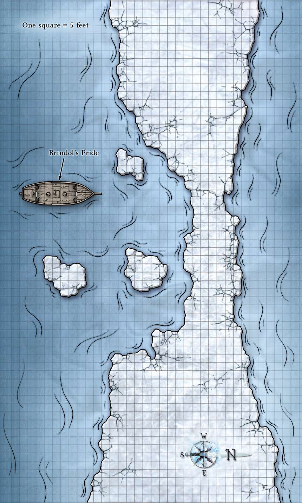

The island nation of Nefelus, a lush tropical realm that has long kept itself isolated from the dealings of the rest of the world, had recently found its tranquil peace disturbed by a threat that even its deva-led mage council (known as the Thraxinium) could not squelch.
While Amyria assembled the Gatekeepers, a mysterious ice floe appeared a few miles off the coast of the island, and within a few days, the warm and pleasant climate of Nefelus began to grow colder, threatening the natural order.
Nefelus took action as soon as it was apparent that the conditions were getting more severe. Endowed with a formidable navy to protect themselves from pirates and foreign interlopers, the Thraxinium dispatched vessels to the ice floe to investigate, and if necessary, fight any present threat. However, unusual arctic sahuagin attacked the ships. Only one vessel made it to the ice floe, and no reports came back from its crew.
Several days passed, and the Thraxinium debated their next course of action as they did research to combat the threat of the climate change. While they were preparing their next moves, the magical cold emanating from the ice floe intensified and over the course of one night, it formed an icy ring that cut off any ships bound in or out of the ports. The nation of Nefelus was under siege, and the weather was getting worse. The ice threatened to continue to spread, and possibly engulf the entire island.
A few days later, several members of the Thraxinium reported that they were enacting a ritual that would stave off any further climatic change as long as the forces behind the unnatural cold did not greatly intensify. Although that bought a little time, it still meant that many members of the Thraxinium had to spend considerable resources maintaining the ritual just to keep the island from being overwhelmed, and the icy ring still separated Nefelus from any help by sea. Despite being isolationist, several Thraxi (members of the Thraxinium) still maintained contact with the outside world. Bejam, a deva on the Thraxinium, formed a friendship with a deva named Amyria. She had been working to convince the Thraxinium to join an alliance of the mortal realm intent on defeating a githyanki invasion. But Nefelus had seen nothing of the githyanki save for a single, strange burglary attempt years before, and they'd heard even less. Reluctant to get involved, the Thraxi, through Bejam, politely refused all Amyria's requests. When the Thraxinium ran out of options to deal with the threat of the ice blockade, however, Bejam turned to Amyria for aid.
Bejam’s message found its way to Amyria just before the Gatekeepers' first meeting in Sayre. After our heroes destroyed the Bitter Glass, freeing Nefelus became Amyria’s top priority. She approached the Gatekeepers and told them of Nefelus’s problems, and their need for assistance. The Gatekeepers agreed to send Amyria as an envoy to Nefelus in the hopes that aid to Nefelus might bring them out of seclusion and into the battle against the githyanki. They did so despite the protests of the Gatekeeper’s leader, Lord Torrance.

Amyria turned to our heroes to accompany her to Nefelus. She chartered a ship called Brindol’s Pride, a warship flying under the colors of the Gatekeepers. Their journey to Nefelus was almost complete. A massive bank of fog loomed directly ahead, and the air became chilly. A cry came out of the crow’s nest from the lookout.

Iceberg to starboard!
Looking to the right, our heroes saw a gigantic, shadowed mass far off in the fog, it stood at least 100 feet tall.
They continued on, the waves licking at the hull of the ship, and then finally, after a few more cold hours, the fog began to lift and they saw a thick ring of ice floating up ahead. Smaller chunks of ice, some the size of large wagons, bobbed up and down in the water near the ship. Just as the ice ring became clear and the captain was preparing to ram, our heroes noticed several large forms became visible through the mist.
Several frost giants took form out of the freezing fog. Some wielded enormous frozen greataxes and others drew back frosty bows with ice arrows. They wer epositioned on the ice ring, where they were preparing to attack, while the ship continued to move toward the ice at ramming speed!
After a rushed battle defending the Brindol's Pride as it crunched through the ice, our heroes broke free on the far side and sailed on through the cold and fog for another mile or so. Abruptly, the fog lifted, the sun shone, and they were awash in the steamy heat of a tropical paradise.
As the ice rapidly melted off the ship’s bow, they saw a city rise before them, clinging to the massive cliffs of an inlet. All around them in the bay, fishing boats and naval vessels meandered about, clinging close to the shores. Many more were docked along the cliff shores. Switchback stairs, walkways, and small wooden buildings dotted the lush cliffsides. At the far top of the cliffs, hundreds of feet in the air, larger wooden structures were packed tightly together, huddled close to the cliff’s edge and away from the dense rainforest that surrounded the city. At the horizon, a great domed structure rose above all to dominate the skyline; from the distance, it looked like a temple or perhaps a university.
As the ship approached the dock, Amyria briefed our heroes on the history of the island:
The Nefelese don't have many visitors from the mainland, and it is both an honor and a privilege to be allowed to enter as guests. The Nefelese have remained isolationist for at least the last two centuries, having little contact with the mainland.
The Nefelese have lived on this island for as long as anyone can remember, and in times past, they used to trade and relate to the other nations of the world. However, a threat from the Elemental Chaos more than two centuries ago almost destroyed their idyllic culture. They blamed the other civilizations for their ignorance, and after ensnaring the threat and locking it away in the world, withdrew almost all ties to the mainland.
Nefelus is both the name of their capital and nation, and few other settlements are on the island. The nation is ruled by a council of deva mages called the Thraxinium.
Nefelus has one of the largest known contingents of devas in the world. Some say that almost the entire island is sacred ground and most devas reincarnate here. All citizens of prominence are devas.
They believe that knowledge and magical prowess are the two greatest attributes an individual can possess. Their ancient and massive Great Library, which also serves as their governmental seat, university, and temple to Corellon and Ioun, is said to contain secrets long lost to the rest of the world.
Once the ship was docked, our heroes left the mundane tasks to the crew and departed with Amyria into the wondrous city of Nefelus. Scaling up the sides of a verdant cliff dotted with buildings that smell like fish and the salty spray of the sea, they reached the top and were nearly lost in the crowded, busied masses of people moving about. Even in the midday sun, the crowds moved rapidly this way and that, but they always appeared to be aware of our heroes' presence and never bumped or brushed up against them.
They continued to make their way through the wooded streets, rife with the sounds of conversation, the chatter of tropical birds, and the constant whispering of the breeze through the exotic trees. After navigating through this urban maze for well over two hours, the entrance to the Great Library was before them.
Here we are. We’re to meet one of their council in the entry hall. His name’s Bejam. Let’s go upstairs and see if we can ask around for him.
They climbed the hundreds of stairs to the domed complex’s yawning gate. Inside a great entry hall stretched on for what seemed like hundreds of feet. Each direction was dotted with multiple hallways and doors leading farther into the complex. Above, they could see the beautiful blue sky streaming through the glass dome, but they were certain that from the outside, the dome looked like it was crafted out of wood. In the center of the hall, a hundred-foot-high orrery depicting the planes and the world gleamed in the sun. The surfaces in the orrery’s universe shifted and moved, as though alive with activity.
Just as they came to the realization that the stifling, humid air had abated, a male deva dressed in a shimmering blue-violet robe with small platinum wings adorning his back approached. He smiled at the retinue and said:
Welcome to Nefelus, our most honored guests. I am Bejam, Sixth Thraxus and Keeper of the Mirrors. It is good to see that you arrived without much delay. Amyria, I will take you before the Thraxinium to discuss the specifics of our situation. As for your retinue, I will have an attendant escort them to a waiting room where they can rest. I am certain we will have need of their expertise soon enough.
Following protocol, he wanted a meeting with Amyria first. After his initial introduction, Bejam motioned to another deva in the chamber, and exited with Amyria, leaving our heroes to be escorted to a well-appointed sitting room where they could rest. They were told by the attendant that it would be some time, and they should rest if they could.
After a long wait and numerous inquiries as to their food and beverage preferences by the attendant, Amyria and Bejam arrived in the sitting room. Amyria spoke:
After long discourse and debate, I have talked on behalf of the Gatekeepers and we’ve entered an arrangement with the Thraxinium. If you assist Nefelus in shedding its problem, they have agreed to at least support the Gatekeepers with material and knowledge. My friends, I must ask you to once again imperil yourselves for the good of our cause. I will let Bejam give you the details that have recently become known to me.
Amyria nodded at Bejam and exits the room as the Thraxus begins to brief them:
Through the Thraxinium’s research, the heart of this problem appears to bear the mark of an artifact known as the Seed of Winter. When properly harnessed by a creature attuned to it, the artifact can cause drastic localized climate changes and can even alter creatures that come in contact with it or are near it. However, we think what’s happening to Nefelus goes beyond the normal power of the artifact; someone or something must be augmenting it in some way. The Seed of Winter was thought lost to the Feywild centuries ago, but it has apparently made its way back into the world.
The Thraxinium knows through divinations and other more mundane observations that the iceberg that appeared out in the sea is the source of the emanations.
Just before the ice ring completely blockaded our ships, we sent out three ships to investigate the iceberg and attempt to deal with the problem. We monitored their progress, and two of the three ships were attacked and destroyed by sahuagin with ice-blue skin. They appeared tougher than normal sahuagin and had an affinity for the cold. The last ship limped to the shore of the iceberg and was under assault by frost giants there; we saw only one survivor make it away from the vessel—a githzerai mentalist named Uarion. We have not heard from him since.
Uarion has been with us for several decades; he is the only githzerai in the city, but he proves his worth to Nefelus time and time again through his mastery of the powers of the mind. He soaks up knowledge like a sponge, and he is probably the most accomplished nondeva ritualist in Nefelus. It would be a shame if he was lost to the power of the Seed.
Asked about his title as the Keeper of Mirrors, Bejam responds:
I am the caretaker of our network of our silver mirrors, which are communication devices that we have planted throughout the world to keep informed of what’s happening on the mainland. We currently set the communication to receive only images and speech, so our observations remain unnoticed. To the untrained eye, a silver mirror can appear as a large mundane item, so its presence is easy enough to conceal. Over the past few months, however, we have noticed that many of our silver mirrors out in the world have gone missing, and until this crisis reared its head, it was my primary concern.
After having finished the briefing, Bejam concludes his talk with and said:
We need your assistance to stop the climate change from overwhelming our island and to break the blockade. From the estimates made by the Thraxinium, we have about a day before our ritualists can no longer sustain the magic holding back the freezing weather. Once the ritual gives way, the island’s climate will be forever altered and many creatures here will die. Nefelus will suffer a corruption the likes of which we have not been threatened with for hundreds of years. I implore you to journey to the iceberg and end this assault on our way of life. If you can bring back the Seed of Winter for study and find out the fate of Uarion, all the better. Amyria says she has not met any more accomplished at dangerous tasks than you. Will you assist us?
Once our heroes agreed to help Nefelus out, Bejam escorted them out of the sitting room into the entry hall where they met up with Amyria. He provided provisions and ice shoes to the party.
With Amyria in tow, Bejam escorted the group down one of those mysterious hallways that lead farther into the Great Library. At the end of the hall, a spiral staircase lead down into the darkness. As they descended down, softly glowing orbs affixed to the walls lit their way. The stairs continued for hundreds of feet. Eventually, they came to a door with a strange series of sigils on its face. Bejam softly intoned some words and the sigils flashed. He opened the door, revealing a workshop with all sorts of tools and arcane objects lying about on various tables. Beyond the workshop, the cavernous room was what looked to be a dock, but no tunnel led out into a waterway. Floating in the pool were three curious objects; they looked like giant silvery lobsters with glass windows where their eyes should be. They could see seats and a number of levers through the windows; these appeared to be a sort of vehicle. Bejam explained that those three vehicles are known as apparatuses of Kwalish, named after the wizard that invented them. He then continues to brief our heroes on their mission:
When we realized that the first ships were attacked and the ice ring blockaded us, we prepared these vehicles for use. They are submersible craft.
You are to pilot the apparatuses of Kwalish to the iceberg so they arrive without much notice. The previous attempts at traveling by ship and the presence of the ice ring make conventional means of getting there riskier.
Each apparatus can carry two people. One of the two needs to be piloting at all times; the other should keep lookout and can operate the claws if needed. The vehicles are equipped on the lever console with a homing arrow that has been attuned to the iceberg such that the arrow always points toward the iceberg.
It should take approximately 3 hours to reach the iceberg from here. The vehicles are easy enough to pilot. You need to surface the vessels after you arrive so that the air can be replenished; there’s only enough air in one of these to take you there.
Bejam gave our heroes a quick course in piloting the apparatus and then assembled the party at the dock.
I have two more items for you to take with you. I am certain that they will be of aid to you on the mission.
He produced a small flickering prism and a scroll tube from his robe.
This object is called an elemental prism. We know that the Seed of Winter grants creatures under its influence resistance to cold attacks, and the prism allows the user to circumvent such defenses while providing the user with protection.
The ritual inked on this scroll is called Solace Bole. It will transport you to a small secluded place in a pocket plane where you can rest and regroup. Time will pass normally there, but when you return, only an hour will have gone by. With the short amount of time we have before our defenses are shattered, you might find this necessary.
As our heroes piled into the submersibles, Amyria asked them to reopen the hatch. She leaned in and said quietly:
One last thing before you leave. I think that it might be possible to convince Bejam to join the Gatekeepers as a representative of Nefelus. I will stay here and attempt to work toward that goal, but ultimately it will depend on the success of your mission. May the platinum dragon bring justice to our enemies.